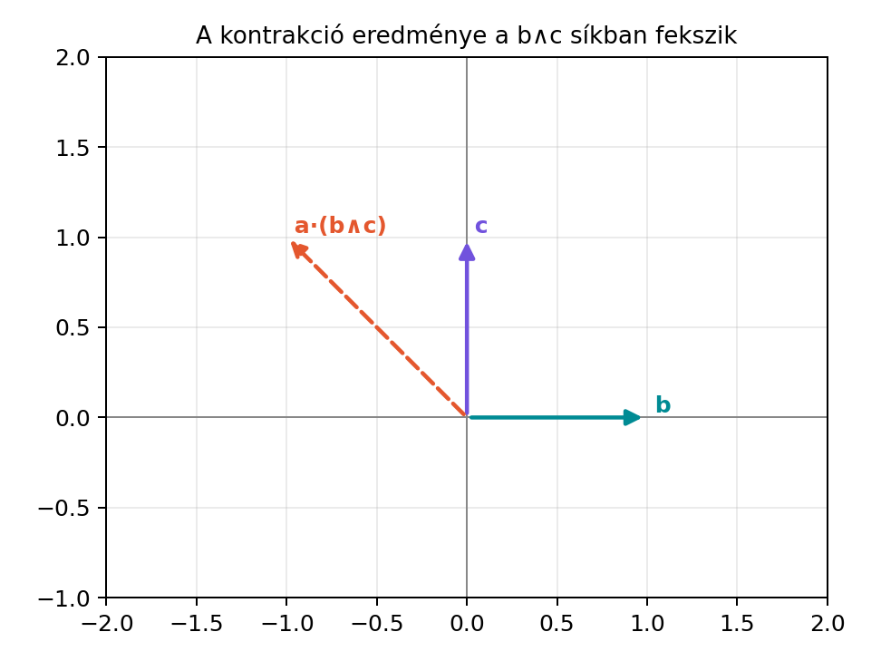

A klasszikus vektorazonosságokat indexekkel vagy rajzolgatással
igazolni gyakran fáradságos. A geometriai algebrában ugyanezek az
azonosságok rövid, koordinátamentes alakot öltenek, és egyetlen
alapelvből, a A kontrakció általános definíciója
következnek. Ebben az alfejezetben a leggyakrabban használt belső
szorzat-azonosságokat vezetjük le. Ezek az átalakítások később
visszaköszönnek a fizikai alkalmazásokban is, ahol a hagyományos
vektoriális szorzatos képletek helyett elegánsabb, dimenziófüggetlen
alakokat használhatunk.
A fő kérdés: ha egy vektort egy bivektorral vagy trivektorral
„pontozunk”, hogyan fejezhető ki az eredmény a közönséges
skalárszorzatokkal és külső szorzatokkal?
9.3.2 Szemléletes kép
Tekintsük a
térben a
vektorokat. A
bivektor az
-síkot
reprezentálja. Azt várjuk, hogy a kontrakció
eredménye ebben a síkban marad, tehát az
irányok kombinációja lesz, és az
-komponens
eltűnik. Az ábra ezt a síkbeli helyzetet mutatja:

A kontrakció eredménye a b∧c síkban
fekszik - A b = e1 és c = e2 vektorok a síkot feszítik. Az a·(b∧c) = e2
− e1 vektor ebben a síkban marad; a merőleges e3-komponens nem ad
járulékot.
Ebből közvetlenül adódik a
bázisvektorokra vonatkozó szabály:
Valóban,
vektorrésze pontosan akkor nem nulla, ha
vagy
;
az első esetben
,
a másodikban
adódik. A bilinearitás miatt ezt a
kifejtésére alkalmazhatjuk.
Tétel (BAC−CAB GA-alakja). Tetszőleges
vektorokra
Bizonyítás. Írjuk fel
a vektorokat ortonormált bázisban:
,
,
.
A bivektor kifejtése
A kontrakció linearitása és a fenti
bázisszabály szerint
A
-kat
behelyettesítve, majd az indexeket újranevezve az
-adik
komponensre
adódik; az
tagok
miatt kiejtik egymást. Ez éppen
,
tehát a két oldal minden komponensben megegyezik.
9.3.3 Kidolgozott példa
Számítsuk ki a motivációban szereplő
vektorokra a
értékét.
Először a bivektort képezzük:
Ezután a kontrakciót lineárisan
kifejtjük:
A három tagot külön-külön számoljuk a
BAC−CAB azonossággal:
Összegezve:
Most ellenőrizzük a tétel jobb
oldalával is:
A két oldal egyezik. Figyeljük meg,
hogy az
-komponens
valóban eltűnt, mert
merőleges a
síkra.
9.3.4 Általánosítás trivektorra:
A háromvektoros esetre ugyanaz a közvetlen bázisszámolás adja a
következő azonosságot, mint a bivektoros BAC−CAB bizonyításában:
Bizonyítás. A
bázisvektorokra
A
kifejtésébe helyettesítve és az indexeket rendezve éppen a fenti
háromtagú kifejezés adódik; a váltakozó előjelek levezetését a következő
szakasz Leibniz-szabálya adja a
választással.
Ez az eredmény bivektor, és a három tag éppen azokat a bivektorokat
tartalmazza, amelyek az
vektor
vektorokkal vett páros belső szorzatain keresztül „szeletelik” a
trivektort.
9.3.5 A vektorkontrakció
fokszámozott Leibniz-szabálya
A háromvektoros számolás általánosítható. Legyen
vektor,
pedig
-fokú
penge. Ekkor
Ezt nevezzük a vektorkontrakció
fokszámozott Leibniz-szabályának. A
penge fokszáma
,
a bal oldalon a kontrakció
-fokú,
és a jobb oldalon mindkét tag szintén
-fokú.
Bizonyítás. Mindkét oldal lineáris
-ban
és
-ben,
valamint lineáris
-ben,
ezért elég bázisvektorokra ellenőrizni. Írjuk fel a
pengét
alakban, és tekintsük a többtényezős kifejtést:
ahol a kalap a kihagyott tényezőt
jelöli. Legyen
,
.
Ha a
indexek között ismétlődés van, a bal oldal nulla. A jobb oldal a
-kben
alternáló, ezért ismétlődő tényezők esetén szintén nulla. Páronként
különböző indexeknél, ha
egyik
-vel
sem egyezik meg, mindkét oldal nulla. Ha
,
akkor az
-t
a
-edik
helyéről a szorzat elé mozgatva
előjelet kapunk, majd
után éppen a többi tényező ékét kapjuk; a jobb oldalon csak a
-edik
tag marad meg, és az ugyanezt adja. Ezzel a kifejtési formula
adódik.
Alkalmazzuk most a formulát
tényezőre a
,
választással. A
tag
.
A
tagokban a
az első helyen marad; a
jelöléssel
,
így ezek összege
,
ahol a
-re
ugyanazt a kifejtési formulát használtuk. Ezzel az állítást
beláttuk.
és a kettős vektoriális szorzat
GA-alakját, amelyet a Dualitás: bivektor és
normálvektor,
alfejezet előre jelzett, itt vezetjük le. Legyen
;
ekkor
,
ami G(3)-ban vektor. Mivel
G(3)-ban mindennel felcserélhető, és vektorra
,
ezért
.
Így
Most már be tudjuk helyettesíteni a
BAC−CAB GA-alakját:
Ez pontosan a klasszikus vektoralgebrai
BAC−CAB szabály:
Tehát a hagyományos, indexeléssel
igazolható azonosság a geometriai algebrában egy kontrakciós
előjelváltásból adódik.
9.3.7 Bivektorok belső szorzata és
a Lagrange-azonosság
A bal kontrakció definíciójából következik, hogy két azonos fokszámú
bivektor kontrakciója skalár, mégpedig a geometriai szorzatuk
skalárrésze:
Legyen
és
.
Ekkor
Ennek kiszámításához használjuk a
geometriai szorzat négytényezős skalárrész-lemmáját:
Szemléletes indoklás.
Ortonormált bázisban a
szorzat skalárrésze csak akkor nem nulla, ha az indexek párban
kiegyenlítik egymást. A három lehetséges párosítás
,
,
;
a hozzájuk tartozó előjel a felcserélések paritásából adódik. Ebből
kapjuk a három fenti tagot.
Most írjuk fel
Ekkor
Mivel
és
,
ez tovább így egyszerűsödik:
A két kivonandó közül az egyik kiesik a
hozzáadott taggal:
Behelyettesítve a négytényezős
lemmát:
Tehát a könyv bal kontrakciós
konvenciójával:
Más könyvekben a reverziós
skalárszorzatot használják, például
(ezt néha szintén belső szorzatnak nevezik). Mivel
,
ott az előjel éppen fordított:
Ez utóbbi alak egyezik a klasszikus
Lagrange-azonosság előjelével.
A klasszikus Lagrange-azonosság a vektoriális szorzatok
skalárszorzatáról szól:
Ezt a geometriai algebrában a
dualitással vezetjük le. Legyen
és
.
Ekkor
Mivel
minden multivektorral felcserélhető, és
:
A bal kontrakciós eredményből tudjuk,
hogy
Ennek negatívja pontosan a klasszikus
Lagrange-azonosság jobb oldalát adja:
A kontrakció nem kommutatív. Általában
;
a fokszámok és az előjelek is eltérhetnek. A sorrendet mindig a
definíció szerint kell meghatározni.
Az eredmény fokszáma.
vektor, nem bivektor, és a
vektorok síkjában fekszik. Sokan tévesen bivektort várnak.
Előjel a kettős vektoriális szorzatnál. A
klasszikus szabály
,
nem pedig fordítva. A GA-alakban a negatív előjel a duális
definíciójából jön.
Bivektorok belső szorzatának előjele. A bal
kontrakció eredménye
,
míg a reverziós
skalárszorzat és a klasszikus Lagrange-azonosság előjele ezzel
ellentétes. A könyv a bal kontrakciót használja; más forrásokban
ellenőrizni kell a konvenciót.
A negyedik vektor szerepeltetése. A trivektoros
kifejtésben a tagok előjelei váltakoznak; egy kihagyott belső szorzat
vagy egy rossz sorrend előjelhibához vezet.
9.3.10 Feladatok
(a) Fogalmi kérdés. Milyen fokszámú
,
és miért fekszik az eredmény a
vektorok által kifeszített síkban?
(b) Kézi számolás. Legyen
Számítsd ki
értékét először a bivektor kifejtésével, majd a BAC−CAB
GA-alakjával.
(c) Levezetési feladat. A vektorkontrakció
fokszámozott Leibniz-szabályát a
választással és a BAC−CAB GA-alakját alkalmazva vezesd le a következő
trivektoros azonosságot:
(d) Alkalmazási,
Python-feladat. A mini könyvtár MV3 osztályával és
lcontract metódusával ellenőrizd a (b) feladat eredményét.
Hozd létre a vektorokat, képezd a bivektort, majd számítsd ki a bal
kontrakciót.
9.3.11 Megoldások
(a) Megoldás. A bivektor fokszáma 2, a vektor
fokszáma 1, így a bal kontrakció fokszáma
.
Az eredmény tehát vektor. A BAC−CAB azonosság jobb oldala
és
lineáris kombinációja, ezért az eredmény a
által kifeszített síkban fekszik.
(b) Megoldás. Először képezzük a bivektort:
Most kontrahálunk:
Korábban láttuk, hogy
Így
Ellenőrzés a BAC−CAB GA-alakjával:
Tehát
A két módszer eredménye egyezik.
(c) Megoldás. Alkalmazzuk a fenti fokszámozott
Leibniz-szabályt a
választással:
A belső kontrakciót a BAC−CAB
azonossággal fejtjük ki: